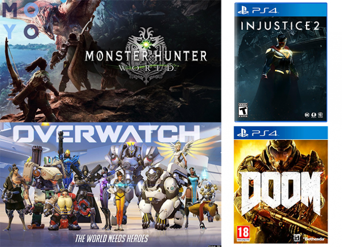

30 лучших игр на Sony Playstation 4 — рейтинг популярных игр на PS4 и не только (2021)
Чем пополнить свою коллекцию игр владельцу PS4? Да много чем можно. В этой подборке — аж 30 популярных игровых проектов, которые идут на эту приставку. Многие варианты подходят и для других платформ. В общем, есть из чего выбрать.
Battlefield 1
Мультиплатформенный шутер от первого лица, в основе которого лежат события Первой мировой войны. Всем, желающим стать частью военной истории, иметь такой экземпляр в игровой коллекции будет очень приятно.
Почему игра считается лучшей:
- Потрясающая реалистичность геометрии и внимание к деталям.
- Обновлённая графика — еще больше кинематографичности.
- В сравнении с Battlefield 4 и Battlefield: Hardline значительно улучшен мультиплеер-режим. Одиночный режим тоже реализован хорошо.
Bloodborne / Bloodborne: The Old Hunters
Это дополнение к Bloodborne, игре в жанре Action/RPG, которая является эксклюзивом для консоли PS4. Геймеру достается роль охотника на чудовищ. Цель проста: найти и уничтожить боссов. Классика, но с яркой оригинальной подачей.
Почему рекомендуют купить версию с дополнением:
- Дополнение включает три новые локации, которые глубже раскрывают основную сюжетную линию. К ним открывается доступ только в процессе победы над определенным боссом: во сне главный герой получает скрытый предмет, который помогает ему перейти в скрытую локацию из дополнения.
- Еще больше экипировки. Кроме того, арсенал охотников пополнился разнообразным оружием.
- Положительные отзывы и высокая оценка критиков: на Metacritic дополнение получило 87 баллов из 100, а на агрегаторе GameRankings набрало — 87,16%
Dark Souls III
Шедевр родом из Японии в стиле Action/RPG затягивает не на шутку. Хит нравится игрокам из-за закрученного сюжета, классной графики и отличного геймплея. В общем, в рейтинг самых популярных игра попала не зря.
Почему советуют поиграть:
- Масштабные лабиринты и болота, где легко потеряться, пришли на смену небольшим подземельям и миловидным полянкам. Для поиска тайников и спрятанных троп придется подключить внимательность и разбудить внутреннего Шерлока: просмотреть и простучать каждую мелочь, вызывающую подозрение.
- Набор стартовых классов изменен в лучшую сторону: любое, даже самое простое снаряжение на поверку оказывается довольно эффективным.
- Мощь атак противника не даст расслабиться. Здесь придется «попотеть» даже опытным поклонникам оборонного стиля.
- Поиграть в нее могут не только консольщики, но и владельцы компьютеров.